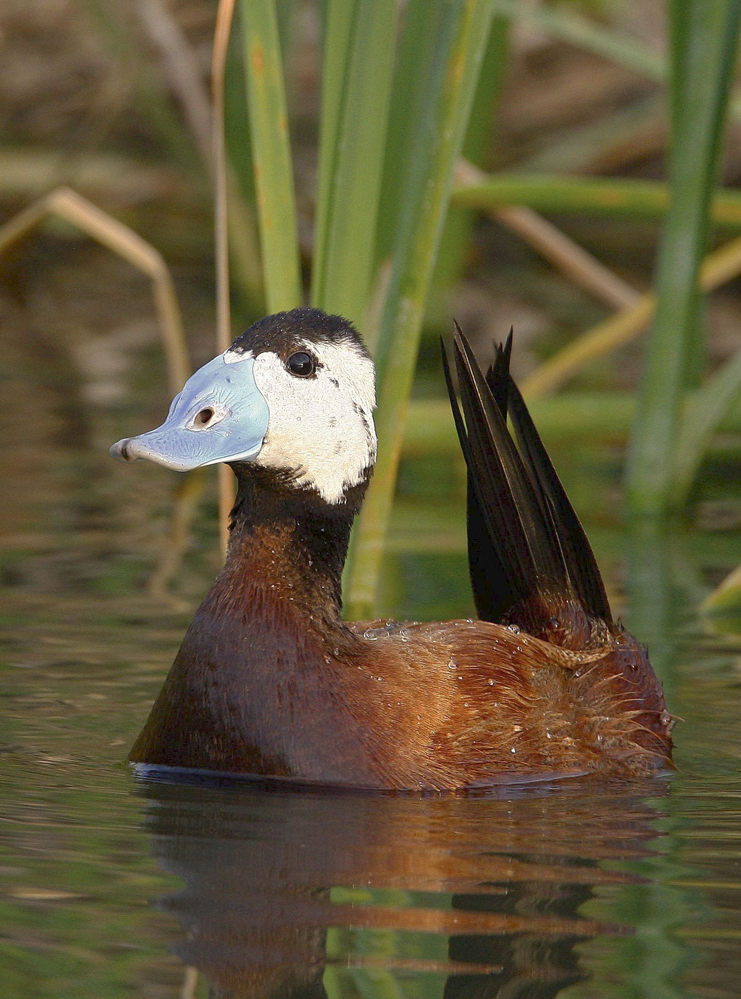

Malvasía Cabeciblanca
La Malvasía cabeciblanca (Oxyura leucocephala), nativa del Paleártico, corresponde a la Clase Aves, Orden Anseriformes, Familia Anatidae, subfamilia Anatinae y Tribu Oxyurini (patos de cola erecta). Se trata de un pato buceador de tamaño y peso medio (43-48 cm de longitud, 62-70 cm de envergadura y 471-865 g de peso), con mayores dimensiones en machos que en hembras. Muestra una voluminosa cabeza con un pico sobresaliente, así como una cola larga (de unos 8-10 cm) que usualmente mantiene en posición vertical. El plumaje es generalmente de pardo-ocráceo a pardo-rojizo con diferentes tonalidades en distintas regiones del cuerpo. Existe dimorfismo sexual en cuanto a plumaje y coloración. Los machos adultos presentan gran cantidad de blanco puro en la cabeza, principalmente distribuido en las mejillas. Además, durante el período reproductor, su pico se torna de gris oscuro a azulado-celeste. La proporción de las partes blancas frente a las negras varía con la edad, siendo más comunes los diseños cefálicos con más negro en los machos jóvenes y más blanco en los machos adultos. Las hembras exhiben una coloración más críptica, con tonos pardos y cabeza con mejilla de color cremoso atravesada longitudinalmente por una franja parda bajo el ojo. Los pollos y jóvenes presentan un plumaje similar al de las hembras, pero el de los machos varía conforme se hacen adultos.
Hábitat:
Selecciona en época de reproducción humedales naturales o artificiales con abundante vegetación perilagunar y subacuática y con profundidades comprendidas entre 70 y 400 cm. Prefiere lagunas donde el agua se renueve, sea algo salobre, esté libre de carpas (Cyprinus carpio) y percas americanas (Micropterus salmoides) y con abundante presencia de quironómidos y otros pequeños invertebrados. El resto del año selecciona lagunas o embalses de tamaño medio o grande y de similares características a los descritos para el periodo reproductor, aunque en este caso no es tan importante la presencia de vegetación perilagunar densa.
Distribución:
La población se encuentra dividida en dos principales poblaciones; una sedentaria o residente que se distribuye en áreas concretas de España, Marruecos, Argelia, Túnez, Turquía, Irán, Turkmenistán y Pakistán; y otra población de mayor tamaño y de carácter migratorio que cría principalmente en zonas de Rusia, Kazakhstán, Uzbequistán, Turkmenistán, China y Mongolia, e inverna en Rumania, Bulgaria, Grecia, Turquía, Irán, Afganistán, Israel, Siria y Pakistán.
Población:
Población natural está entre los 8.000-13.000 individuos. En la Región de Murcia se encuentra en antiguas depuradoras de lagunaje de aguas residuales